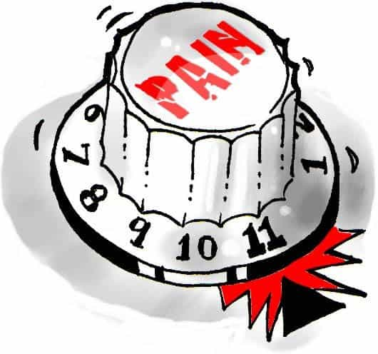
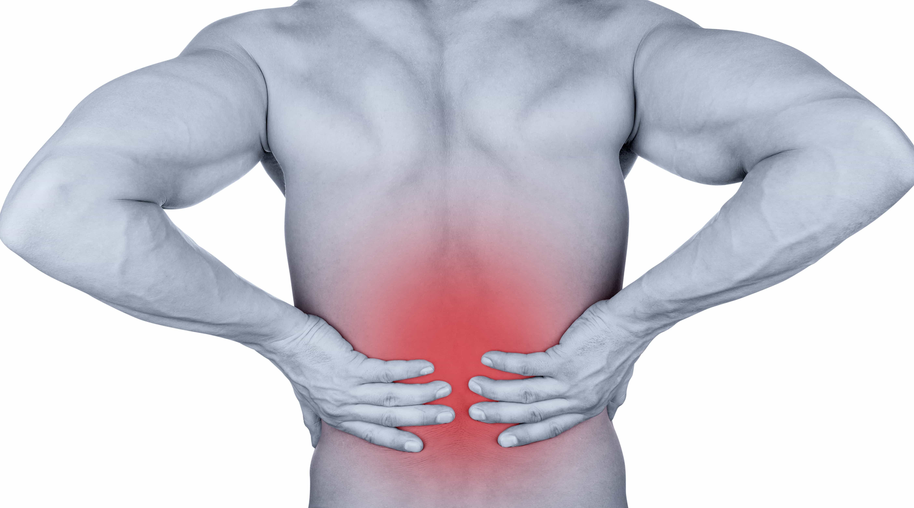

Women are superior to men in every possible way. We know this from watching TV. Sitcoms, for instance, teach us that women are far, far more intelligent than men. Suspense thrillers show us that men are wife-beaters, rapists and murderers while women are either their victims or the intellectually and morally superior saviors who foil our villainy. Dramas demonstrate that women are more honest and faithful than us fickle, cheating men. And watch any action-adventure made within the last few decades, and you’ll see that women are physically stronger, tougher, and better fighters than men are.
This last bit of collective cultural programming has not only convinced Americans of every political stripe that women belong in the Armed Forces, but especially in the combat arms and elite units. This programming isn’t just reinforced on your High Definition Gynovision Set, either. Every female and white knight (which is about 75-90% of the male population in the West) will readily inform you that women are tougher than men. Because childbirth.

The childbirth subject functions as a trump card or smart bomb which ends any debate regarding pain tolerance relative to the sexes. Men have no answer for this smart bomb, because we don’t get pregnant. However, it’s for that very reason I reject the argument. So far as empirical science goes, if you want to test and compare reactions in different test subjects, all subjects must be exposed to the same exact stimulus. Since men don’t get pregnant, childbirth is a ridiculous metric—it makes it impossible to compare apples with apples.
My experiences were what caused me to question this sacred cow; and I’m sure many men have anecdotal evidence to do the same. No doubt many of you have noticed that women generally can’t handle cold temperatures as well as we can. They bruise easier; sprain easier; fatigue easier. Once both I and a female counterpart suffered burns from the same heat source. My burn was deeper and wider, and hurt like a blind mother, yet it was her who couldn’t shut up about all the pain she was suffering for the next two weeks.
Before the Feminist Cancer had worked its way completely through the American military, the only time I encountered uniformed females was when my unit was assigned to train ROTC cadets. These kickass Womyn Warriors only had to carry from ½ to 2/3rds of what their male counterparts carried (thanks to white knights redistributing the load in the name of “equality”), yet couldn’t keep up with their units on short marches, and bellyached the entire way. (The breakdown in noise discipline and discipline, period, would never have been tolerated from men back in those days.)

None of this should be surprising. According to a 2012 Stanford University study, women tend to rate pain input as more acute by a point higher than men on a 1-10 scale. A 2009 University of Florida study found that women show greater sensitivity to most forms of pain; take more pain killers; visit the doctor more for pain; whereas men showed a higher tolerance for physical discomfort of most kinds. Of course, scientific studies are not ironclad proof of anything, since pain is so subjective. So don’t let anyone get away with claiming that the pain tolerance argument is “settled science.”
The GrrrlPower Gang will likely purport that men can handle certain types of pain better simply because the human male body was designed in such a way as to better withstand extreme temperatures, physical blows, heavier burdens, etc. Fair enough—I concur. But I’ll add that the female body was likewise designed to carry and give birth to children. (Gee…it’s almost like men and women are designed, physiologically, to fulfill different roles.)
The blue pill world is convinced that childbirth is the pinnacle of physical suffering—mostly because women have been complaining about it, and telling us that it is, for thousands of years. Again, pain is too subjective to ever devise a universal measuring rod. But if there was some way to objectively quantify the pain of childbirth, then subject the average man to the same exact dose, I suspect he wouldn’t complain nearly as loud or persistently. If he did, you and I would probably tell him to shut up, suck it up and drive on. Frankly, even those of us who aren’t white knights don’t like to see females suffer; so we would never react to a woman giving birth with such enforcement of equality.

Here’s what most of you reading this article already know about women: all but maybe the very best of them are Drama Machines and Attention Whores. They want to receive the highest accolades that men can earn but without earning it themselves. One tactic they believe will help steer them toward their rightful place on our pedestals is to convince us that they can endure suffering beyond what a mere man can possibly imagine. The culture at large (and most individual women in the West) have assigned themselves the daunting task of presenting women as superior to men, yet simultaneously oppressed victims of us. This narrative necessitates cognitive gymnastics, hyper-selective reporting, and creative rhetoric to maintain.
Women are not the masters at pain tolerance. What they are masters of (Western women, at least) is talking shit. There’s likely no benefit to wasting logical arguments to dispute their Womyn Warrior Narrative and its Childbirth Cornerstone. But next time a woman bitches about a bruise, scrape, chapped lips, or some other horrendous boo-boo, just remind her of her superhuman pain tolerance and follow up with a remark like, “I thought you were supposed to be tough.” The results might be fun.
Read Next: How To Grow In Times Of Pain